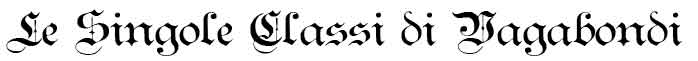

Gli appartenenti alle classi dei vagabondi sono personaggi versatili ed esperti guastatori. Il loro addestramento gli permette di effettuare veloci e lesivi attacchi e di operare dietro le linee nemiche. Le varie classi di vagabondi possono essere suddivise in tre grandi gruppi:

|
PROGRESSIONE THAC0 DEI VAGABONDI |
||||||||||||||||||||
| LIVELLO | 1° | 2° | 3° | 4° | 5° | 6° | 7° | 8° | 9° | 10° | 11° | 12° | 13° | 14° | 15° | 16° | 17° | 18° | 19° | 20° |
| THAC0 | 20 | 20 | 19 | 19 | 18 | 18 | 17 | 17 | 15 | 15 | 14 | 14 | 13 | 13 | 12 | 12 | 11 | 11 | 10 | 10 |
PUNTI FERITA:
i vagabondi ottengono 1d6 punti ferita dal 1° al 10° livello di esperienza.
Dall'11° livello in poi ottengono 2 punti ferita supplementari non modificati
dalla costituzione.
Indipendentemente dalla classe specifica di appartenenza, gli appartenenti a qualsiasi classe di combattenti possono selezionare, in sede di creazione del personaggio, alcuni talenti generali acquistandoli attraverso l'utilizzo dei punti creazione a loro disposizione.
| NOME | Maestria Ladresca |
| COSTO IN PUNTI CREAZIONE | 1 |
| REQUISITO PARTICOLARE | PUNTEGGIO IN DESTREZZA ALMENO PARI A 12 |
| DESCRIZIONE |
Alcuni vagabondi sono in grado di impegnarsi con maggiore concentrazione
quando utilizzano le loro abilità da ladro. Per tale motivo, i vagabondi
che scelgono questo talento generale ottengono il seguente beneficio: |
| NOME | Movimento Laterale |
| COSTO IN PUNTI CREAZIONE | 2 |
| REQUISITO PARTICOLARE | PUNTEGGIO IN DESTREZZA ALMENO PARI A 15 |
| DESCRIZIONE |
Alcuni vagabondi sono capaci di muoversi combattendo intorno al nemico
con movimenti fulminei e senza scoprirsi. Per tale
motivo, i vagabondi che scelgono questo talento generale ottengono i
seguenti benefici: |
| NOME | Equilibrio Protettivo |
| COSTO IN PUNTI CREAZIONE | 3 |
| REQUISITO PARTICOLARE | NESSUNO - NON ACQUISTABILE DAI CANTORI |
| DESCRIZIONE |
Alcuni vagabondi utilizzano una particolare tecnica di combattimento che
permette loro di effettuare movimenti rapidi e per difendersi dai colpi
in arrivo. Per tale
motivo, i vagabondi che scelgono questo talento generale ottengono il
seguente beneficio: |
| NOME | Equilibrio Lesivo |
| COSTO IN PUNTI CREAZIONE | 3 |
| REQUISITO PARTICOLARE | NESSUNO - NON ACQUISTABILE DAI CANTORI |
| DESCRIZIONE |
Alcuni vagabondi utilizzano una particolare tecnica di combattimento che
permette loro di effettuare movimenti rapidi e precisi per affrontare i
propri avversari con maggiore efficacia. Per tale
motivo, i vagabondi che scelgono questo talento generale ottengono il
seguente beneficio: |
| NOME | Evasione Acrobatica |
| COSTO IN PUNTI CREAZIONE | 3 |
| REQUISITO PARTICOLARE | PUNTEGGIO IN DESTREZZA ALMENO PARI A 15 |
| DESCRIZIONE |
Alcuni vagabondi sono particolarmente addestrati ad evitare i pericoli
utilizzando la loro superiore agilità. Per tale
motivo, i vagabondi che scelgono questo talento generale ottengono il
seguente beneficio: |
| NOME | Bottino dei Vagabondi | ||||||||||||||||||||||||||||||||||||||||||||||||||||||
| COSTO IN PUNTI CREAZIONE | Variabile | ||||||||||||||||||||||||||||||||||||||||||||||||||||||
| REQUISITO PARTICOLARE | NESSUNO | ||||||||||||||||||||||||||||||||||||||||||||||||||||||
| DESCRIZIONE |
Nel
corso della loro carriera, non di rado i vagabondi possono imbattersi in
rari oggetti incantati.
Per tale motivo, i vagabondi che scelgono questo talento
generale ottengono il seguente beneficio:
|
